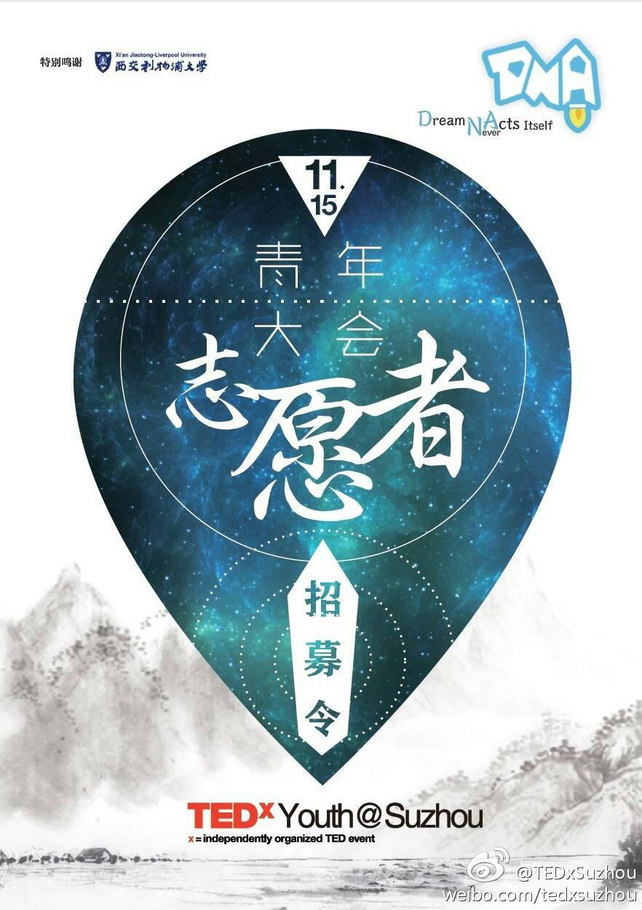
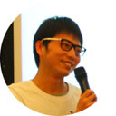

以往

Dream Never Acts Itself
2014 TEDxYouth@Suzhou 青年大会
2014-11-15 Sat. 1pm
工业园区西交利物浦大学
住口！无耻老贼，岂不知天下之人，皆愿生啖你肉，安敢在此饶舌！今幸天意不绝炎汉，昭烈皇帝继统西川。吾今奉嗣君之旨，兴师讨贼。汝既为谄谀之臣，只可潜身缩首，苟图衣食，怎敢在我军面前妄称天数！皓首匹夫!苍髯老贼，你即将命归九泉之下，届时有何颜面去见汉朝二十四代先帝！

李实(Simon Lee),
炉石传说新手玩家
炉石传说新手玩家

无名这(Noname Zhe)
现在论坛使用官方esotalk.org的程序。使用https。但是有一个问题：无论如何也不能保存登录状态。在浏览器中一登录，然后过一段时间再访问，就显示“You should login again for security reasons”了。
现在论坛使用官方esotalk.org的程序。使用https。但是有一个问题：无论如何也不能保存登录状态。在浏览器中一登录，然后过一段时间再访问，就显示“You should login again for security reasons”了。
毕烨(Angel Bi)
医生、美国哈佛大学医院管理硕士，历任上海数家外资医院高管，曾有9年军旅生涯，现为移动医疗领域探索创业者，爱丁备孕助孕项目创始人兼CEO。
医生、美国哈佛大学医院管理硕士，历任上海数家外资医院高管，曾有9年军旅生涯，现为移动医疗领域探索创业者，爱丁备孕助孕项目创始人兼CEO。